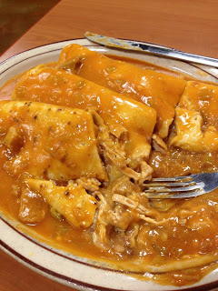

Las Glorias
By Heather and Roy Hemmert
Summary
Where: Las Glorias, 750 E 1065 S, Orem UT
Who Went: Roy and Heather
Number of Visits: 1
What I Ordered:
- Chicken tamale, Beef enchilada
- 3 Chicken Smothered burritos
What It Cost: $24.62 (before tip)
What I Thought
Avoid! Avoid!
Okay, I had to get that out of my system first.
Roy and I love Mexican food, so when we received a few coupons for Las Glorias, we decided to try them out. (Though we ended up not being able to use the coupon...which caused another waste in this experience.) On the drive up there, I found three reviews for this place, and all of them were pretty negative overall. But, we were already there, we had plans for after dinner (so there was the time frame to consider), and we like trying new restaurants, so we decided to give it shot anyways. Bad idea.
We went in and there were only about three other groups of people in the place (not busy=kinda nice, but wonder why, on a Saturday night, it's so empty...). So we were seated right away, on hard benches that hurt my hips by the end of the meal. The first server looked like a depressed young kid whose face never changed emotions the whole time. And after he seated us, he kinda just wandered around doing nothing the rest of the time we were there.
Our first thought at looking at the menu was this place seemed to be a very Americanized Mexican restaurant, so that was a red flag to me. We got our drinks and chips/salsa quickly though, and the water with my lemon was actually good. Little did I know that would be the only good thing coming... The chips looked/tasted like they had just been opened from a store bought bag and had this weird seasoning on them that Roy and I couldn't figure out what exactly it was. And then the salsa. This was my biggest disappointment of the night, since chips and salsa at a Mexican restuarant are the main reasons I go in the first place!
It's consistency and look was like ketchup (a comment from the reviews we had read had warned of that); pasty and un-salsa like. It was spicy, which was nice, but I'm not a fan of "salsa" that just slides down your throat like a thick, raw egg. Salsa should have chunks in it! This one looked/tasted like it came straight from a can.
I wanted to leave right then and there, since we hadn't ordered yet by the time I had tasted the salsa, but I couldn't convince Roy. He felt embarrassed to leave, since we had already been seated. I offered to be the one to apologize and explain so that we could leave, since I knew I wouldn't want to waste money on a restaurant that had no great reviews already and it's salsa was like ketchup. Alas, we stayed, and I tried to tough it out, though I think I just pouted the whole way through. And here's more good reasons why:
The waitress took our order, not writing anything down, so I worried about that. I got a shredded beef enchilada and a chicken tamale --enchilada style (there was no option for a beef tamale). I also wanted Horchata, since that was the one good thing the reviews had said about the place, but they were out of it. (Making me wonder, how could they be out of it if it's not even busy in here?)
When the food finally came, I didn't even bother to take a picture of mine right away (Roy got one taken after I had eaten most of it) because I wasn't impressed.
First off, the tamale wasn't there. The girl said it would be coming out "shortly." (I think she just forgot to include it in the order. We heard her in the kitchen messing up someone else's order later that night too) Half-way through our meal, after I had finished the enchilada by a long shot, it finally came. Anyways, back to my plate.
It came with a few cut tomatoes, and some lettuce that looked wilted and old. The enchilada itself was covered in cheese and sauce, which seemed promising. However, after cutting into it, I realized HALF of it had absolutely no meat in it. Half! The tortilla was soggy (another warning we read about in the previous reviews) and the sauce, though not disgusting, tasted like it was out of a can from Smith's Grocery. The shredded beef was pretty good, though the sauce overpowered most of it's flavor (again, already warned of this in the review, so I'm guessing those reviews were correct). What you see in the picture is about a third of the enchilada left, where there's only a ton of rubbery cheese and soggy tortilla left, since I couldn't force it down without meat. I sat playing with the sauce the rest of the meal.
Finally my tamale came, but surprise, surprise, it wasn't the way I ordered it. I wanted it enchilada style, made sure to state it that way to the girl, but it came out just a plain old chicken tamale with hardly any meat in it as well. We didn't even bother taking a picture, but if we had, you'd see about half of it left because it was all just the breading part, no meat left inside. Worst waste of money.
Roy's Thoughts
I will keep this simple. The burrito sauce was pretty good but I could tell it was not freshly made. Also, the tortillas are like store bought flour tortillas, so they got soggy really fast. As leftovers, it didn't taste so great either.
The salsa was more like paste. It was spicy but it was not salsa. It was more like eating enchilada sauce with chips. There wasn't really anything great about this place.
Oh and some advice to the men. If your significant other wants to leave, LEAVE!
And I'll add a tiny bit, since I tasted his: the chicken tasted like the chicken that's in my Cambell's soups I take to school when I have nothing else for lunch. It was not good.
What You Should Do
Avoid. Obviously, from my rant about the food and service, it's no secret I'll be telling people I love (and random strangers) to skip this place. (I even mentioned it to some strangers waiting to be seated while we walked out. No need for anyone else to get disappointed/waste their money). And one of the worst parts: No leftovers for me the next day (Roy had some)! That's another one of the best parts of Mexican restaurants; getting to continue enjoying the food the next day. *sigh* For the experience, price, food quality, and service getting my order wrong, we say: skip it entirely and go to Mama Chus in Orem instead (review to come!)